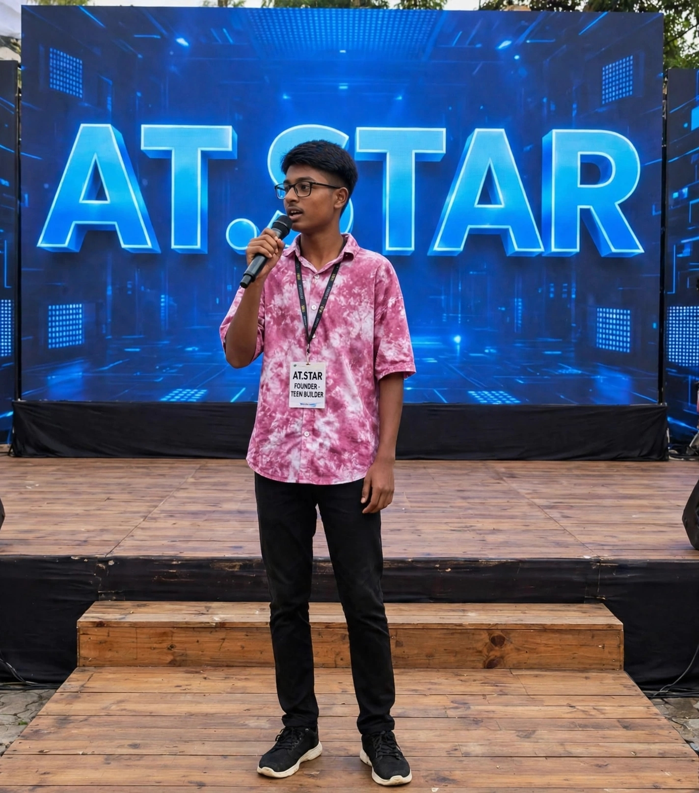

✦ AT.STAR ✦ EST. 2026

Arya varamurthi ❤ is a young entrepreneur, technology enthusiast and visionary innovator with a passion for building the future. As the Founder and CEO of AT.STAR, he is dedicated to exploring technology, developing innovative digital platforms and transforming creative ideas into reality.
He is known as the Young Web Builder of India - building websites, AI apps and games from India for the world.
✅ Founder & CEO - AT.STAR
✅ Young Web Builder of India
✅ Build AI Platforms & Apps
✅ Build Websites & Games
✅ Create Digital Products
✅ Turn Ideas Into Reality
✅ Future Vision - Bigger Than ChatGPT
Young Web Builder of India - Arya Varamurthi - Arya Varamurthi Young Web Builder of India - Founder AT.STAR India
© 2026 AT.STAR
MADE BY ARYA VARAMURTHI ♥
FOUNDER AND CEO
YOUNG WEB BUILDER OF INDIA 🇮🇳